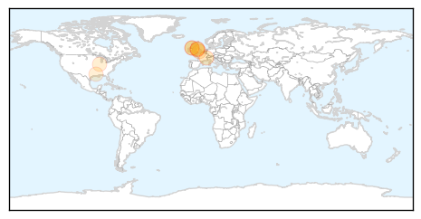
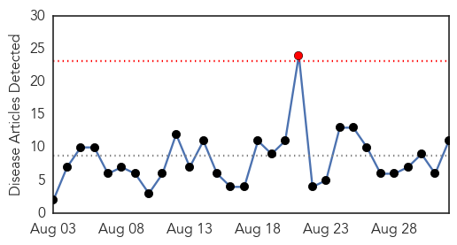
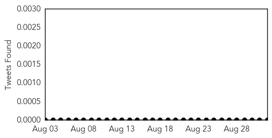
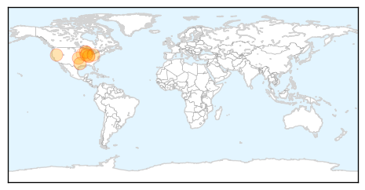

Meningitis
30-Day Web Trend
2 alerts, 0 warnings

30-Day Twitter Trend
1 alerts, 0 warnings

Article Locations
Article Confidences

Top Articles:
- 0.942
- Meningitis B vaccinations start across UK for all newborns
- 0.751
- Can flying make you ill?
- 0.751
- New vaccine to beat meningitis B baby killer
- 0.733
- Campaigner's delight at introduction of new vaccine to fight meningitis in newborn babies
- 0.608
- Babies in Northern Ireland to get new vaccine to combat one of the most lethal strains of meningitis
- 0.594
- Enough meningitis jabs for all university students
- 0.530
- Lake Forest schools working to comply with new state vaccine mandate
- 0.503
- Louisiana Department of Health and Hospitals (via noodls) / DHH Confirms Naegleria Fowleri Ameba in North Monroe Water System
Top Tweets:
-
No tweets found for Sep 01, 2015
West Nile Virus
30-Day Web Trend
1 alerts, 0 warnings

30-Day Twitter Trend
0 alerts, 0 warnings

Article Locations
Article Confidences

Top Articles:
- 0.995
- Douglas County Confirms 1st Case of West Nile Virus
- 0.991
- Local public health department urges West Nile precautions
- 0.976
- West Nile virus kills elderly man from Chicago south suburb
- 0.968
- Authorities suggest caution after probable case of West Nile virus in the Algarve
- 0.958
- Second Human West Nile Case Surfaces in Washoe County
- 0.901
- Washoe County Horse Tests Positive for West Nile
- 0.895
- West Nile Virus discovered in Brown County
- 0.828
- First West Nile case this summer reported in Summit County
- 0.781
- West Nile virus turns up around southeastern Wisconsin
- 0.730
- Tippecanoe Co. Health: West Nile detected in mosquitoes
- 0.661
- IDPH: Mosquitoes Still a Threat
Top Tweets:
-
No tweets found for Sep 01, 2015